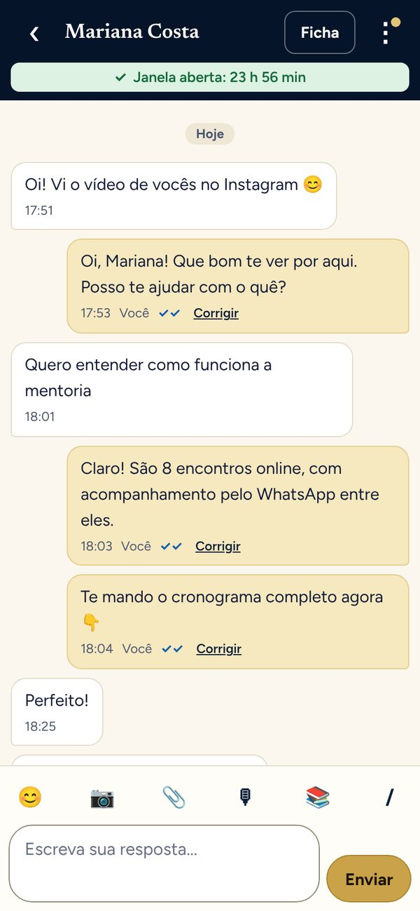
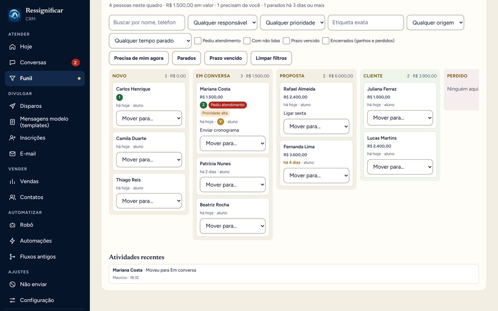
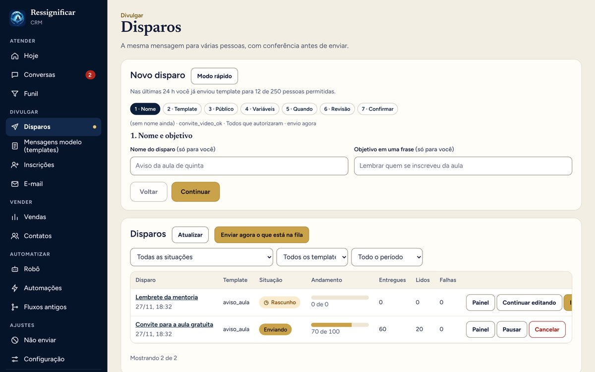
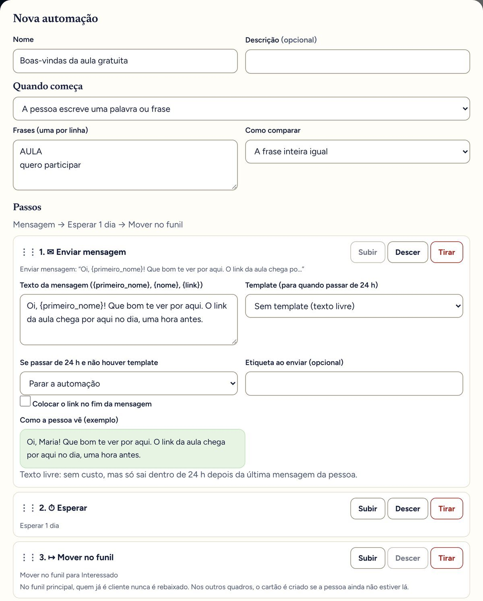
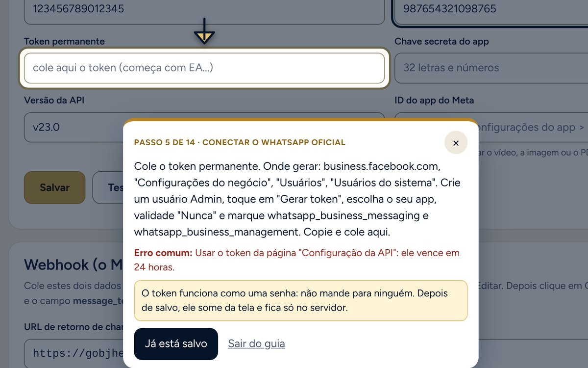
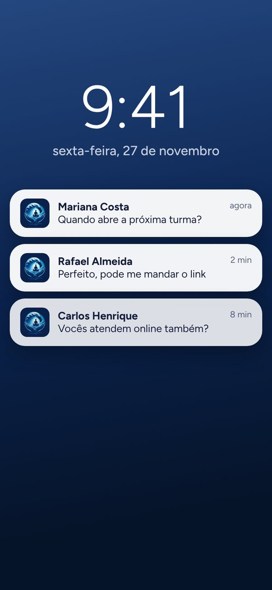

Quantos clientes você perdeu este mês só porque demorou para responder?
O Ressignificar CRM organiza o seu WhatsApp oficial num lugar só: conversas, funil, disparos e automações. No celular e no computador, com um guia que faz junto com você.
O seu WhatsApp virou uma bagunça?
- A mensagem chega enquanto você atende. Quando lembra de responder, a pessoa já esfriou.
- Você não sabe quem pediu o preço, quem já comprou e quem sumiu.
- Manda a mesma mensagem um por um, copiando e colando, a noite inteira.
- Usa aplicativo de disparo não oficial e vive com medo de ter o número bloqueado.
- Quem começou a comprar e não pagou nunca recebe um lembrete.
- Tudo depende da sua memória.
Não é falta de vontade. É falta de organização. Quem responde na hora certa, lembra de cada cliente e acompanha a conversa até o fim, vende mais.
Tudo do seu atendimento, num lugar só
Estas são as telas reais do Ressignificar CRM, com clientes fictícios.
As conversas, como no WhatsApp que você já conhece
No celular, a lista é igual à do WhatsApp: foto com as iniciais, última mensagem, hora e quantas não foram lidas. Quem está esperando você aparece com há quanto tempo.
Você bate o olho e sabe quem responder primeiro.
Cada conversa com tudo à mão
Abra a conversa em tela cheia. Responda com texto, áudio, foto ou PDF. Digite / e escolha uma resposta pronta. Toque nos três pontinhos para mudar a etapa, pôr etiqueta ou pausar o robô.
Responder fica mais rápido do que no próprio WhatsApp.

O funil mostra em que etapa cada pessoa está
Novo, em conversa, proposta, cliente. Cada pessoa é um cartão, com o valor, a próxima ação e há quantos dias está parada. Arraste o cartão ou use "Mover para".
Você sabe quem está quase comprando e quem precisa de um empurrão.

Disparos com conferência antes de enviar
A mesma mensagem para centenas de pessoas, pelo WhatsApp oficial. Em 7 etapas simples: o nome, a mensagem aprovada, para quem vai, o que muda de pessoa para pessoa, quando, a conferência e a confirmação. Antes de enviar, você vê quantas pessoas vão receber, quanto deve custar e manda um teste para o seu número.
Sem copiar e colar, e sem o risco dos aplicativos não oficiais.

Automações que vendem enquanto você atende
Quando a pessoa escreve uma palavra, entra numa lista, começa a comprar e não paga, ou some, o CRM faz sozinho o que você combinou: manda a mensagem, espera, manda de novo e move no funil. Se a pessoa responder, a sequência para.
Ninguém fica sem resposta, nem quando você está ocupado.

Um guia que faz junto com você
Você não precisa entender de tecnologia. Toque no que quer fazer e o guia vai junto: aponta o campo, explica com palavras simples, mostra um exemplo e avisa o erro mais comum.
- Conectar o WhatsApp oficial, até a parte do token
- Trazer os seus contatos de uma planilha ou PDF
- Criar a mensagem que a Meta aprova (template)
- Fazer o primeiro disparo e a primeira automação
- Configurar o robô, o e-mail e os avisos no celular
Do zero ao primeiro disparo sem depender de ninguém.

O celular avisa quando alguém escreve
Instale o CRM na tela inicial e ele abre como um aplicativo. Quando chega mensagem, o celular avisa, mesmo com o CRM fechado. Você escolhe: a cada mensagem nova, ou só quando alguém pedir atendimento.
Você responde na hora certa, de onde estiver.

Feito para quem vende pelo WhatsApp
- WhatsApp oficial da MetaA conexão oficial, sem aplicativo pirata e sem medo de bloqueio.
- Robô de respostasResponde sozinho a palavras como "link", "preço" e "horário".
- Página de inscriçãoUm link para a pessoa entrar na sua lista, já com autorização.
- E-mail juntoCampanhas e avisos por e-mail para a mesma lista.
- Vendas num lugar sóQuem pagou, quanto entrou e quem começou e não pagou.
- Cuidado com a sua listaQuem pede para sair, sai na hora. E o CRM avisa antes de mandar demais.
Sem o Ressignificar CRM
- Cliente esfria esperando resposta
- Ninguém sabe em que pé está cada conversa
- Disparo no copiar e colar, ou com app de risco
- Quem não pagou fica esquecido
Com o Ressignificar CRM
- O celular avisa e você responde na hora
- Cada pessoa na etapa certa do funil
- Disparo oficial, com conferência antes
- Automação lembra quem não pagou
Basta uma venda recuperada para ele se pagar
R$ 347 /mês
Cerca de R$ 11,60 por dia · no cartão · sem fidelidade
ou R$ 3.497 por ano: equivale a R$ 291 por mês, e você economiza R$ 667
Você fala com a gente pelo WhatsApp e a ativação é acompanhada: ligamos o seu número oficial junto com você.
Perguntas frequentes
É o WhatsApp oficial?
Sim. O Ressignificar CRM usa a conexão oficial da Meta para empresas. É o caminho aprovado pela Meta para atender e mandar mensagens em quantidade, sem o risco dos aplicativos não oficiais.
Preciso de um número novo?
Você precisa de um número só para o CRM, que não esteja em uso no aplicativo WhatsApp comum. Muita gente usa um chip novo para isso.
A Meta cobra pelas mensagens?
As mensagens que você inicia com template são cobradas pela Meta, direto no cartão da sua conta Meta, e o valor depende do tipo da mensagem. Responder quem escreveu nas últimas 24 horas não é cobrado. Antes de cada disparo, o CRM mostra a estimativa.
Preciso entender de tecnologia?
Não. O guia passo a passo vai junto com você em cada configuração, até a parte do token. E a ativação é acompanhada pela nossa equipe.
Funciona no celular?
Sim, no celular e no computador. No celular, as conversas funcionam como no WhatsApp, e você pode instalar o CRM na tela inicial para receber avisos quando alguém escrever.
Alguém além de mim vê as minhas conversas?
Não. Cada cliente tem a própria conta e o próprio número. As suas conversas e os seus contatos são só seus.
Posso cancelar o plano mensal?
Pode, quando quiser, sem multa. É só falar com o Mauricio pelo WhatsApp.